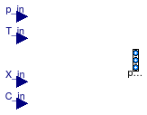
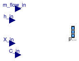
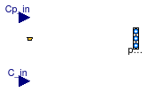

Package with boundary condition models
Package Sources contains generic sources for fluid connectors to define fixed or prescribed ambient conditions.
Extends from Modelica.Icons.SourcesPackage (Icon for packages containing sources).
| Name | Description |
|---|---|
| Boundary_pT | Boundary with prescribed pressure, temperature, composition and trace substances |
| Boundary_ph | Boundary with prescribed pressure, specific enthalpy, composition and trace substances |
| FixedBoundary | Boundary source component |
| MassFlowSource_T | Ideal flow source that produces a prescribed mass flow with prescribed temperature, mass fraction and trace substances |
| Ideal flow source that produces a prescribed mass flow with prescribed specific enthalpy, mass fraction and trace substances | |
| Outside | Boundary that takes weather data, and optionally trace substances, as an input |
| Outside_Cp | Boundary that takes weather data, and optionally the wind pressure coefficient and trace substances, as an input |
| Outside_CpLowRise | Boundary that takes weather data as an input and computes wind pressure for low-rise buildings |
| TraceSubstancesFlowSource | Source with mass flow that does not take part in medium mass balance (such as CO2) |
| Collection of models that illustrate model use and test models | |
| Package with base classes for Buildings.Fluid.Sources |
Boundary with prescribed pressure, temperature, composition and trace substances

Defines prescribed values for boundary conditions:
If use_p_in is false (default option), the p parameter
is used as boundary pressure, and the p_in input connector is disabled; if use_p_in is true, then the p parameter is ignored, and the value provided by the input connector is used instead.
The same applies to the temperature, composition and trace substances.
Note, that boundary temperature, mass fractions and trace substances have only an effect if the mass flow is from the boundary into the port. If mass is flowing from the port into the boundary, the boundary definitions, with exception of boundary pressure, do not have an effect.
Extends from Modelica.Fluid.Sources.BaseClasses.PartialSource (Partial component source with one fluid connector).
| Type | Name | Default | Description |
|---|---|---|---|
| replaceable package Medium | PartialMedium | Medium model within the source | |
| Boolean | use_p_in | false | Get the pressure from the input connector |
| Boolean | use_T_in | false | Get the temperature from the input connector |
| Boolean | use_X_in | false | Get the composition from the input connector |
| Boolean | use_C_in | false | Get the trace substances from the input connector |
| AbsolutePressure | p | Medium.p_default | Fixed value of pressure [Pa] |
| Temperature | T | Medium.T_default | Fixed value of temperature [K] |
| MassFraction | X[Medium.nX] | Medium.X_default | Fixed value of composition [kg/kg] |
| ExtraProperty | C[Medium.nC] | fill(0, Medium.nC) | Fixed values of trace substances |
| Type | Name | Description |
|---|---|---|
| FluidPorts_b | ports[nPorts] | |
| input RealInput | p_in | Prescribed boundary pressure |
| input RealInput | T_in | Prescribed boundary temperature |
| input RealInput | X_in[Medium.nX] | Prescribed boundary composition |
| input RealInput | C_in[Medium.nC] | Prescribed boundary trace substances |
Boundary with prescribed pressure, specific enthalpy, composition and trace substances

Defines prescribed values for boundary conditions:
If use_p_in is false (default option), the p parameter
is used as boundary pressure, and the p_in input connector is disabled; if use_p_in is true, then the p parameter is ignored, and the value provided by the input connector is used instead.
The same applies to the temperature, composition and trace substances.
Note, that boundary temperature, mass fractions and trace substances have only an effect if the mass flow is from the boundary into the port. If mass is flowing from the port into the boundary, the boundary definitions, with exception of boundary pressure, do not have an effect.
Extends from Modelica.Fluid.Sources.BaseClasses.PartialSource (Partial component source with one fluid connector).
| Type | Name | Default | Description |
|---|---|---|---|
| replaceable package Medium | PartialMedium | Medium model within the source | |
| Boolean | use_p_in | false | Get the pressure from the input connector |
| Boolean | use_h_in | false | Get the specific enthalpy from the input connector |
| Boolean | use_X_in | false | Get the composition from the input connector |
| Boolean | use_C_in | false | Get the trace substances from the input connector |
| AbsolutePressure | p | Medium.p_default | Fixed value of pressure [Pa] |
| SpecificEnthalpy | h | Medium.h_default | Fixed value of specific enthalpy [J/kg] |
| MassFraction | X[Medium.nX] | Medium.X_default | Fixed value of composition [kg/kg] |
| ExtraProperty | C[Medium.nC] | fill(0, Medium.nC) | Fixed values of trace substances |
| Type | Name | Description |
|---|---|---|
| FluidPorts_b | ports[nPorts] | |
| input RealInput | p_in | Prescribed boundary pressure |
| input RealInput | h_in | Prescribed boundary specific enthalpy |
| input RealInput | X_in[Medium.nX] | Prescribed boundary composition |
| input RealInput | C_in[Medium.nC] | Prescribed boundary trace substances |
Boundary source component
This model defines constant values for boundary conditions:
Note, that boundary temperature, density, specific enthalpy, mass fractions and trace substances have only an effect if the mass flow is from the Boundary into the port. If mass is flowing from the port into the boundary, the boundary definitions, with exception of boundary pressure, do not have an effect.
Extends from Modelica.Fluid.Sources.BaseClasses.PartialSource (Partial component source with one fluid connector).
| Type | Name | Default | Description |
|---|---|---|---|
| replaceable package Medium | PartialMedium | Medium model within the source | |
| Boundary pressure or Boundary density | |||
| Boolean | use_p | true | select p or d |
| AbsolutePressure | p | Medium.p_default | Boundary pressure [Pa] |
| Density | d | Medium.density_pTX(Medium.p_... | Boundary density [kg/m3] |
| Boundary temperature or Boundary specific enthalpy | |||
| Boolean | use_T | true | select T or h |
| Temperature | T | Medium.T_default | Boundary temperature [K] |
| SpecificEnthalpy | h | Medium.h_default | Boundary specific enthalpy [J/kg] |
| Only for multi-substance flow | |||
| MassFraction | X[Medium.nX] | Medium.X_default | Boundary mass fractions m_i/m [kg/kg] |
| Only for trace-substance flow | |||
| ExtraProperty | C[Medium.nC] | fill(0, Medium.nC) | Boundary trace substances |
| Type | Name | Description |
|---|---|---|
| FluidPorts_b | ports[nPorts] |
Ideal flow source that produces a prescribed mass flow with prescribed temperature, mass fraction and trace substances
Models an ideal flow source, with prescribed values of flow rate, temperature, composition and trace substances:
If use_m_flow_in is false (default option), the m_flow parameter
is used as boundary pressure, and the m_flow_in input connector is disabled; if use_m_flow_in is true, then the m_flow parameter is ignored, and the value provided by the input connector is used instead.
The same applies to the temperature, composition and trace substances.
Note, that boundary temperature, mass fractions and trace substances have only an effect if the mass flow is from the boundary into the port. If mass is flowing from the port into the boundary, the boundary definitions, with exception of boundary flow rate, do not have an effect.
Extends from Modelica.Fluid.Sources.BaseClasses.PartialSource (Partial component source with one fluid connector).
| Type | Name | Default | Description |
|---|---|---|---|
| replaceable package Medium | PartialMedium | Medium model within the source | |
| Boolean | use_m_flow_in | false | Get the mass flow rate from the input connector |
| Boolean | use_T_in | false | Get the temperature from the input connector |
| Boolean | use_X_in | false | Get the composition from the input connector |
| Boolean | use_C_in | false | Get the trace substances from the input connector |
| MassFlowRate | m_flow | 0 | Fixed mass flow rate going out of the fluid port [kg/s] |
| Temperature | T | Medium.T_default | Fixed value of temperature [K] |
| MassFraction | X[Medium.nX] | Medium.X_default | Fixed value of composition [kg/kg] |
| ExtraProperty | C[Medium.nC] | fill(0, Medium.nC) | Fixed values of trace substances |
| Type | Name | Description |
|---|---|---|
| FluidPorts_b | ports[nPorts] | |
| input RealInput | m_flow_in | Prescribed mass flow rate |
| input RealInput | T_in | Prescribed fluid temperature |
| input RealInput | X_in[Medium.nX] | Prescribed fluid composition |
| input RealInput | C_in[Medium.nC] | Prescribed boundary trace substances |
Ideal flow source that produces a prescribed mass flow with prescribed specific enthalpy, mass fraction and trace substances

Models an ideal flow source, with prescribed values of flow rate, temperature and composition:
If use_m_flow_in is false (default option), the m_flow parameter
is used as boundary pressure, and the m_flow_in input connector is disabled; if use_m_flow_in is true, then the m_flow parameter is ignored, and the value provided by the input connector is used instead.
The same applies to the temperature, composition and trace substances.
Note, that boundary temperature, mass fractions and trace substances have only an effect if the mass flow is from the boundary into the port. If mass is flowing from the port into the boundary, the boundary definitions, with exception of boundary flow rate, do not have an effect.
Extends from Modelica.Fluid.Sources.BaseClasses.PartialSource (Partial component source with one fluid connector).
| Type | Name | Default | Description |
|---|---|---|---|
| replaceable package Medium | PartialMedium | Medium model within the source | |
| Boolean | use_m_flow_in | false | Get the mass flow rate from the input connector |
| Boolean | use_h_in | false | Get the specific enthalpy from the input connector |
| Boolean | use_X_in | false | Get the composition from the input connector |
| Boolean | use_C_in | false | Get the trace substances from the input connector |
| MassFlowRate | m_flow | 0 | Fixed mass flow rate going out of the fluid port [kg/s] |
| SpecificEnthalpy | h | Medium.h_default | Fixed value of specific enthalpy [J/kg] |
| MassFraction | X[Medium.nX] | Medium.X_default | Fixed value of composition [kg/kg] |
| ExtraProperty | C[Medium.nC] | fill(0, Medium.nC) | Fixed values of trace substances |
| Type | Name | Description |
|---|---|---|
| FluidPorts_b | ports[nPorts] | |
| input RealInput | m_flow_in | Prescribed mass flow rate |
| input RealInput | h_in | Prescribed fluid specific enthalpy |
| input RealInput | X_in[Medium.nX] | Prescribed fluid composition |
| input RealInput | C_in[Medium.nC] | Prescribed boundary trace substances |
Boundary that takes weather data, and optionally trace substances, as an input

This model describes boundary conditions for pressure, enthalpy, and species concentration that can be obtained from weather data.
To use this model, connect weather data from
Buildings.BoundaryConditions.WeatherData.ReaderTMY3 to the port
weaBus of this model.
This will cause the medium of this model to be
at the pressure that is obtained from the weather file, and any flow that
leaves this model to be at the temperature and humidity that are obtained
from the weather data.
If the parameter use_C_in is false (default option),
the C parameter
is used as the trace substance for flow that leaves the component, and the
C_in input connector is disabled; if use_C_in is true,
then the C parameter is ignored, and the value provided by the input connector is used instead.
Note that boundary temperature, mass fractions and trace substances have only an effect if the mass flow is from the boundary into the port. If mass is flowing from the port into the boundary, the boundary definitions, with exception of boundary pressure, do not have an effect.
Extends from Buildings.Fluid.Sources.BaseClasses.Outside (Boundary that takes weather data, and optionally trace substances, as an input).
| Type | Name | Default | Description |
|---|---|---|---|
| replaceable package Medium | PartialMedium | Medium model within the source | |
| Boolean | use_C_in | false | Get the trace substances from the input connector |
| ExtraProperty | C[Medium.nC] | fill(0, Medium.nC) | Fixed values of trace substances |
| Type | Name | Description |
|---|---|---|
| FluidPorts_b | ports[nPorts] | |
| input RealInput | C_in[Medium.nC] | Prescribed boundary trace substances |
| Bus | weaBus | Bus with weather data |
Boundary that takes weather data, and optionally the wind pressure coefficient and trace substances, as an input

This model describes boundary conditions for
pressure, enthalpy, and species concentration that can be obtained
from weather data. The model is identical to
Buildings.Fluid.Sources.Outside,
except that it allows adding the wind pressure to the
pressure at the fluid port ports.
The pressure p at the port ports is computed as
p = pw + Cp 1 ⁄ 2 v2 ρ
where
pw is the atmospheric pressure from the weather bus,
Cp is the wind pressure coefficient,
v is the wind speed from the weather bus, and
ρ is the fluid density.
If use_Cp_in=true, then the
wind pressure coefficient is obtained from the input connector
Cp_in. Otherwise, it is set to the parameter
Cp.
Extends from Buildings.Fluid.Sources.BaseClasses.Outside (Boundary that takes weather data, and optionally trace substances, as an input).
| Type | Name | Default | Description |
|---|---|---|---|
| replaceable package Medium | PartialMedium | Medium model within the source | |
| Boolean | use_C_in | false | Get the trace substances from the input connector |
| ExtraProperty | C[Medium.nC] | fill(0, Medium.nC) | Fixed values of trace substances |
| Boolean | use_Cp_in | false | Get the wind pressure coefficient from the input connector |
| Real | Cp | 0.6 | Fixed value of wind pressure coefficient |
| Type | Name | Description |
|---|---|---|
| FluidPorts_b | ports[nPorts] | |
| input RealInput | C_in[Medium.nC] | Prescribed boundary trace substances |
| Bus | weaBus | Bus with weather data |
| input RealInput | Cp_in | Prescribed wind pressure coefficient [1] |
Boundary that takes weather data as an input and computes wind pressure for low-rise buildings

This model describes boundary conditions for
pressure, enthalpy, and species concentration that can be obtained
from weather data. The model is identical to
Buildings.Fluid.Sources.Outside,
except that it adds the wind pressure to the
pressure at the fluid port ports.
The correlation that is used to compute the wind pressure is based
on Swami and Chandra (1987) and valid for low-rise buildings
with rectangular shape.
The same correlation is also implemented in CONTAM (Persily and Ivy, 2001).
For other buildings, the model
Buildings.Fluid.Sources.Outside_Cp should be used that takes
the wind pressure coefficient as an input or parameter.
The wind pressure coefficient is computed based on the side ratio of the walls, which is defined as
s = x ⁄ y
where x is the length of the wall that will be connected to
this model, and y is the length of the adjacent wall.
The wind direction is computed relative to the azimuth of this surface,
which is equal to the parameter azi.
The surface azimuth is defined in
Buildings.Types.Azimuth.
For example, if an exterior wall is South oriented, i.e., its outside-facing
surface is towards South, use
Buildings.Types.Azimuth.S.
Based on the surface azimuth, the wind direction and the side ratio
of the walls, the model computes how much the wind pressure
is attenuated compared to the reference wind pressure Cp0.
The reference wind pressure Cp0 is a user-defined parameter,
and must be equal to the wind pressure at zero wind incidence angle.
Swami and Chandra (1987) recommend Cp0 = 0.6 for
all low-rise buildings as this represents the average of
various values reported in the literature.
The computation of the actual wind pressure coefficient Cp
is explained in the function
Buildings.Airflow.Multizone.BaseClasses.windPressureLowRise
that is called by this model.
The pressure p at the port ports is computed as
p = pw + Cp 1 ⁄ 2 v2 ρ,
where pw is the atmospheric pressure from the weather bus, v is the wind speed from the weather bus, and ρ is the fluid density.
Extends from Buildings.Fluid.Sources.BaseClasses.Outside (Boundary that takes weather data, and optionally trace substances, as an input).
| Type | Name | Default | Description |
|---|---|---|---|
| replaceable package Medium | PartialMedium | Medium model within the source | |
| Boolean | use_C_in | false | Get the trace substances from the input connector |
| ExtraProperty | C[Medium.nC] | fill(0, Medium.nC) | Fixed values of trace substances |
| Real | Cp0 | 0.6 | Wind pressure coefficient for wind normal to wall |
| Real | s | Side ratio, s=length of this wall/length of adjacent wall | |
| Angle | azi | Surface azimuth (South:0, West:pi/2) [rad] | |
| Type | Name | Description |
|---|---|---|
| FluidPorts_b | ports[nPorts] | |
| input RealInput | C_in[Medium.nC] | Prescribed boundary trace substances |
| Bus | weaBus | Bus with weather data |
 Buildings.Fluid.Sources.TraceSubstancesFlowSource
Buildings.Fluid.Sources.TraceSubstancesFlowSource
Source with mass flow that does not take part in medium mass balance (such as CO2)

A typical use of this model is to add carbon dioxide to room air, since the carbon dioxide concentration is typically so small that it need not be added to the room mass balance, and since the mass flow rate can be made small compared to the room volume if the medium that leaves this component has a carbon dioxide concentration of 1.
Extends from Modelica.Fluid.Sources.BaseClasses.PartialSource (Partial component source with one fluid connector).
| Type | Name | Default | Description |
|---|---|---|---|
| replaceable package Medium | PartialMedium | Medium model within the source | |
| String | substanceName | "CO2" | Name of trace substance |
| Boolean | use_m_flow_in | false | Get the trace substance mass flow rate from the input connector |
| MassFlowRate | m_flow | 0 | Fixed mass flow rate going out of the fluid port [kg/s] |
| Type | Name | Description |
|---|---|---|
| FluidPorts_b | ports[nPorts] | |
| input RealInput | m_flow_in | Prescribed mass flow rate for extra property |